首页 > 编程笔记
C++数组及其使用方法完全攻略
到目前为止，我们所使用的变量都被设计为一次只保存一个值。图 1 中的每个变量定义都只能保留足够的内存来保存指定数据类型的一个值。
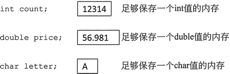
图 1 只能保存一个值的不同类型的变量
一个数组就像一个变量，但是它可以存储一组值，所有值均具有相同的数据类型。这些值一起存储在连续的内存位置。以下是一个 int 数组的定义：
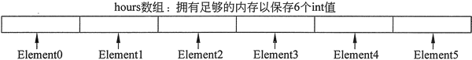
图 2 存储 6 个元素的数组示例
数组的大小声明符必须是一个常量整数表达式，其值大于零。它可以是一个常数，就像前面的例子，也可以是一个命名常量，如下所示：
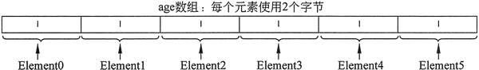
图 3 存储 6 个短整型值的数组将占用 12 个字节的内存空间
数组大小的计算方法是：将存储单个元素所需的字节数乘以数组中元素的数量。表 4 显示了典型系统上各种数组的大小。
之所以可以实现这一点，是因为每个元素都分配有一个称为下标的数字。下标用作一个索引来精确定位一个数组中的特定元素，第一个元素分配下标 0，第二个元素分配下标 1，依此类推。
刚刚定义的 hours 数组中的 6 个元素具有下标 0〜5，如图 5 所示。
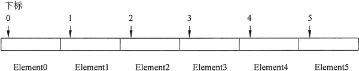
图 5 数组元素的下标
注意，C++ 中的下标编号总是从零开始。数组中最后一个元素的下标比数组中元素的总数少 1。这意味着在图 5 所示的数组中，元素 hours[6] 不存在，数组中的最后一个元素是 hours [5]。
hours 数组中的每个元素在被下标访问时都可以用作 int 变量。以下是一个将数字 20 存储在数组的第一个元素中的语句示例：
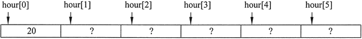
图 6 给 hours[0] 赋值之后的数组
注意，由于数组的其他元素尚未赋值，所以使用问号来表示这些元素的内容是未知的。如果采用全局定义方式定义一个包含数值的数组，则默认情况下，其所有元素都被初始化为零。但是，如果定义的是局部数组，则没有默认的初始值。
以下语句可以将整数 30 存储到 hours[3] 中。请注意，这是第 4 个数组元素：
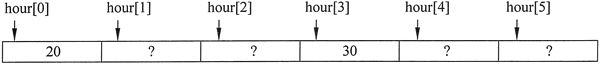
图 7 有 2 个元素已赋值的数组
注意，理解数组大小声明符和下标之间的区别很重要。数组定义方括号内的数字是大小声明符，它指定了数组有多少个元素。赋值语句或使用数组内容的任何语句中的方括号内的数字都是下标，它指定正在访问哪个元素。
数组元素可以与其他变量一样，使用赋值语句接收值。但是，整个数组不能一次性为所有元素接收值。假设已经定义了以下两个数组：
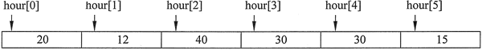
图 8 hours数组存储的值
虽然大多数 C++ 编译器要求数组定义的大小声明符是常量或常数，但下标数字可以存储在变量中，这使得程序员可以通过循环来“遍历”整个数组，对每个元素执行相同的操作。
例如，上边的程序可以通过使用两个循环来简化：一个用于将值输入到数组中，另一个用于显示数组的内容。详细方法如下面程序所示：
由于 for 循环将 count 初始化为 0，所以循环第一次迭代时，将用户输入值读入 hours[0]。下一次循环迭代时，count 等于 1，所以这次用户输入值被读入 hours[1] 中。这样一直持续到最后一次迭代，count 等于 5，所以最终的用户输入值被读入 hours[5] 中。for 循环的测试条件是 count 小于 NUM_EMPLOYEES（也就是 6），所以当 count 等于 6 时，循环结束。
程序的第二个 for 循环出现在第 15 行和第 16 行。它以类似的方式工作，只不过这个循环使用 cout 来显示每个数组元素的值，而不是用 cin 来给每个数组元素写入值。在第 15 行中，count 变量被重新初始化为 0，所以第一次循环迭代时，显示存储在 hours[0] 中的值。下一次循环迭代时，count 等于 1，所以这次显示存储在 hours[1] 中的值。这样一直持续到最后一次迭代，count 等于 5，显示 hours[5] 中存储的值。
例如，C++ 不执行数组边界检查。这意味着程序员编写的程序，可能会意外地允许一个数组的下标越界。这也是为什么程序8-3的第23行要测试循环控制变量值的原因，必须确保它小于 NUM_EMPLOYEES（它是数组的大小），然后才允许循环继续迭代和读取值。
如果程序试图读入一个文件中的所有项目，而这个文件包含的项目多于该数组所能容纳的项目，则可能会导致严重的问题。究竟发生什么取决于系统如何管理内存。在许多系统上，它会导致附近其他变量的内容被覆盖，失去正确的值。在某些系统上甚至会导致死机。
下面程序演示了当数组下标越界时，程序编写者的计算机上发生了什么。它证明存储在一个数组中的数据会覆盖另一个数组中的数据：
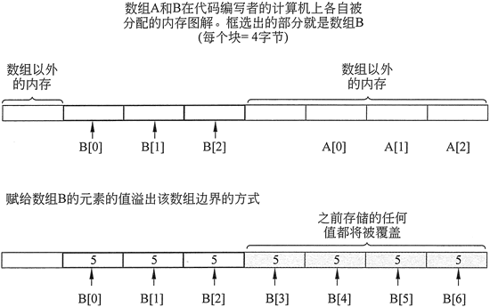
图 9 数组 B 下标越界导致数组 A 的值被覆盖
现在知道了，为什么每次将值赋给数组元素非常重要，因为必须确保将这些值写入数组的边界内。
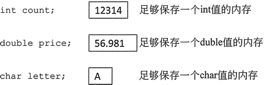
图 1 只能保存一个值的不同类型的变量
一个数组就像一个变量，但是它可以存储一组值，所有值均具有相同的数据类型。这些值一起存储在连续的内存位置。以下是一个 int 数组的定义：
int hours [6];
该数组的名字是 hours。方括号内的数字是数组的大小声明符。它表示数组可以容纳的元素或值的数量。hours 数组可以存储 6 个元素，每个元素都是一个整数，如图 2 所示。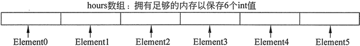
图 2 存储 6 个元素的数组示例
数组的大小声明符必须是一个常量整数表达式，其值大于零。它可以是一个常数，就像前面的例子，也可以是一个命名常量，如下所示：
const int SIZE = 6; int hours [SIZE];可以定义任何数据类型的数组，以下全部都是有效的数组定义：
float temperature [100] ; // 100 个 float 值的数组 char letter [2 6] ; // 26 个 char 值的数组 double size [1200] ; // 1200 个 double 值的数组 string name [10] ; // 10 个 string 对象的数组
数组的内存要求
数组使用的内存量取决于数组的数据类型和元素的数量。例如，以下定义的 age 数组是一个包含 6 个短整型（short int）值的数组：short age[6];
在一台典型的 PC 上，一个短整型使用 2 个字节的内存，所以 age 数组将占用 12 个字节，如图 3 所示。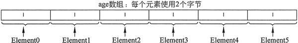
图 3 存储 6 个短整型值的数组将占用 12 个字节的内存空间
数组大小的计算方法是：将存储单个元素所需的字节数乘以数组中元素的数量。表 4 显示了典型系统上各种数组的大小。
| 数组声明 | 元素的数量 | 元素的大小 | 数组的大小 |
|---|---|---|---|
| char letter[26]; | 26 | 1个字节 | 26个字节 |
| short ring[ 100]; | 100 | 2个字节 | 200个字节 |
| int mile[84]; | 84 | 4个字节 | 336个字节 |
| float temp [12]; | 12 | 4个字节 | 48个字节 |
| double distance[1000]; | 1000 | 8个字节 | 8000个字节 |
访问数组元素
即使整个数组只有一个名称，这些元素也可以作为单独的变量进行访问和使用。之所以可以实现这一点，是因为每个元素都分配有一个称为下标的数字。下标用作一个索引来精确定位一个数组中的特定元素，第一个元素分配下标 0，第二个元素分配下标 1，依此类推。
刚刚定义的 hours 数组中的 6 个元素具有下标 0〜5，如图 5 所示。
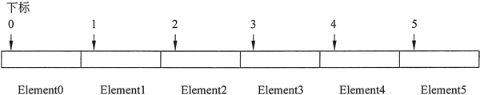
图 5 数组元素的下标
注意，C++ 中的下标编号总是从零开始。数组中最后一个元素的下标比数组中元素的总数少 1。这意味着在图 5 所示的数组中，元素 hours[6] 不存在，数组中的最后一个元素是 hours [5]。
hours 数组中的每个元素在被下标访问时都可以用作 int 变量。以下是一个将数字 20 存储在数组的第一个元素中的语句示例：
hours[0] =20;
图 6 显示了该语句将 20 赋值给 hours[0] 之后的 hours 数组的内容。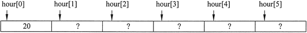
图 6 给 hours[0] 赋值之后的数组
注意，由于数组的其他元素尚未赋值，所以使用问号来表示这些元素的内容是未知的。如果采用全局定义方式定义一个包含数值的数组，则默认情况下，其所有元素都被初始化为零。但是，如果定义的是局部数组，则没有默认的初始值。
以下语句可以将整数 30 存储到 hours[3] 中。请注意，这是第 4 个数组元素：
hours[3] = 30;
图 7 显示了执行这个语句之后数组的内容。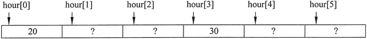
图 7 有 2 个元素已赋值的数组
注意，理解数组大小声明符和下标之间的区别很重要。数组定义方括号内的数字是大小声明符，它指定了数组有多少个元素。赋值语句或使用数组内容的任何语句中的方括号内的数字都是下标，它指定正在访问哪个元素。
数组元素可以与其他变量一样，使用赋值语句接收值。但是，整个数组不能一次性为所有元素接收值。假设已经定义了以下两个数组：
int doctorA [5] ; //保留A医生每5天的看病人数 int doctorB [5] ; //保留B医生每5天的看病人数以下全部都是合法的赋值语句：
doctorA[0] =31; // doctorA[0]现已保存值 31 doctorA[1] = 40; //doctorA[1]现己保存值 40 doctorA[2] = doctorA[0]; //doctorA[2]也已保存值 31 doctorB [0] = doctorA[1] ; //doctorB [0]现已保存值 40但是，以下语句都是非法的：
doctorA = 152; //非法！数组不能作为一个整体赋值 doctorB = doctorA; //只能使用下标，每次给一个元素赋值
输入和显示数组内容
也可以使用 cin 对象读取数组元素的信息，并使用 cout 对象显示其值，就像常规变量一样，只要一次对一个元素执行即可。下面程序显示了前面讨论的 hours 数组，用于存储和显示用户输入的值。#include <iostream> using namespace std; int main() { const int NUM_EMPLOYEES = 6; int hours[NUM_EMPLOYEES]; // Input the hours worked by each employee cout << "Enter the hours worked by " << NUM_EMPLOYEES << " employees: "; cin >> hours[0]; cin >> hours[1]; cin >> hours[2]; cin >> hours[3]; cin >> hours[4]; cin >> hours[5]; //Display the contents of the array cout << "The hours you entered are:"; cout << " " << hours[0]; cout << " " << hours[1]; cout << " " << hours[2]; cout << " " << hours[3]; cout << " " << hours[4]; cout << " " << hours[5] << endl; return 0; }程序输出结果：
Enter the hours worked by 6 employees: 20 12 40 30 30 15
The hours you entered are: 20 12 40 30 30 15
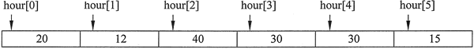
图 8 hours数组存储的值
虽然大多数 C++ 编译器要求数组定义的大小声明符是常量或常数，但下标数字可以存储在变量中，这使得程序员可以通过循环来“遍历”整个数组，对每个元素执行相同的操作。
例如，上边的程序可以通过使用两个循环来简化：一个用于将值输入到数组中，另一个用于显示数组的内容。详细方法如下面程序所示：
#include <iostream>
using namespace std;
int main()
{
const int NUM_EMPLOYEES = 6;
int hours[NUM_EMPLOYEES];// Holds hours worked for 6 employees
int count; // Loop counter
// Input the hours worked by each employee
cout << "Enter the hours worked by " << NUM_EMPLOYEES << " employees: ";
for (count = 0; count < NUM_EMPLOYEES; count++)
cin >> hours[count];
// Display the contents of the array
cout << "The hours you entered are:" ;
for (count = 0; count < NUM_EMPLOYEES; count++)
cout << " " << hours [count];
cout << endl;
return 0;
}
程序运行结果为：
Enter the hours worked by 6 employees: 20 12 40 30 30 15
The hours you entered are: 20 12 40 30 30 15
由于 for 循环将 count 初始化为 0，所以循环第一次迭代时，将用户输入值读入 hours[0]。下一次循环迭代时，count 等于 1，所以这次用户输入值被读入 hours[1] 中。这样一直持续到最后一次迭代，count 等于 5，所以最终的用户输入值被读入 hours[5] 中。for 循环的测试条件是 count 小于 NUM_EMPLOYEES（也就是 6），所以当 count 等于 6 时，循环结束。
程序的第二个 for 循环出现在第 15 行和第 16 行。它以类似的方式工作，只不过这个循环使用 cout 来显示每个数组元素的值，而不是用 cin 来给每个数组元素写入值。在第 15 行中，count 变量被重新初始化为 0，所以第一次循环迭代时，显示存储在 hours[0] 中的值。下一次循环迭代时，count 等于 1，所以这次显示存储在 hours[1] 中的值。这样一直持续到最后一次迭代，count 等于 5，显示 hours[5] 中存储的值。
C++中没有数组边界检查
从历史上看，C++ 广受欢迎的原因之一就是程序员使用计算机内存的自由度。但是，这意味着其他语言提供的许多防止程序不安全地访问内存的安全措施，在c++中是不存在的。例如，C++ 不执行数组边界检查。这意味着程序员编写的程序，可能会意外地允许一个数组的下标越界。这也是为什么程序8-3的第23行要测试循环控制变量值的原因，必须确保它小于 NUM_EMPLOYEES（它是数组的大小），然后才允许循环继续迭代和读取值。
如果程序试图读入一个文件中的所有项目，而这个文件包含的项目多于该数组所能容纳的项目，则可能会导致严重的问题。究竟发生什么取决于系统如何管理内存。在许多系统上，它会导致附近其他变量的内容被覆盖，失去正确的值。在某些系统上甚至会导致死机。
下面程序演示了当数组下标越界时，程序编写者的计算机上发生了什么。它证明存储在一个数组中的数据会覆盖另一个数组中的数据：
#include <iostream>
using namespace std;
int main()
{
const int SIZE = 3;
int A [SIZE] = {1, 1, 1};
int B[SIZE];
cout << "Here are the original numbers in 3-element array A: ";
for (int count = 0; count < 3; count++)
cout << A[count] << " ";
cout << "\n\nNow I'm storing 7 numbers in 3-element array B.";
for (int count = 0; count < 7; count++)
B[count] =5;
cout << "\nlf you see this message, the computer did not crash.";
cout << "\n\nHere are the 7 numbers in array B : ";
for (int count = 0; count < 7; count++)
cout << B [count] << " ";
cout << "\nHere are the numbers now in array A: ";
for (int count = 0; count < 3; count ++)
cout << A [count] <<" ";
cout << "\n\nArray A's values were overwritten by \n"
<< "the values that did not fit in Array B. \n";
return 0;
}
程序输出结果为：
Here are the original numbers in 3-element array A: 1 1 1
Now I'm storing 7 numbers in 3-element array B.
lf you see this message, the computer did not crash.
Here are the 7 numbers in array B : 5 5 5 5 5 5 5
Here are the numbers now in array A: 5 5 5
Array A's values were overwritten by
the values that did not fit in Array B.
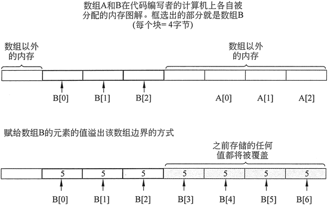
图 9 数组 B 下标越界导致数组 A 的值被覆盖
现在知道了，为什么每次将值赋给数组元素非常重要，因为必须确保将这些值写入数组的边界内。
关注公众号「站长严长生」，在手机上阅读所有教程，随时随地都能学习。内含一款搜索神器，免费下载全网书籍和视频。

微信扫码关注公众号